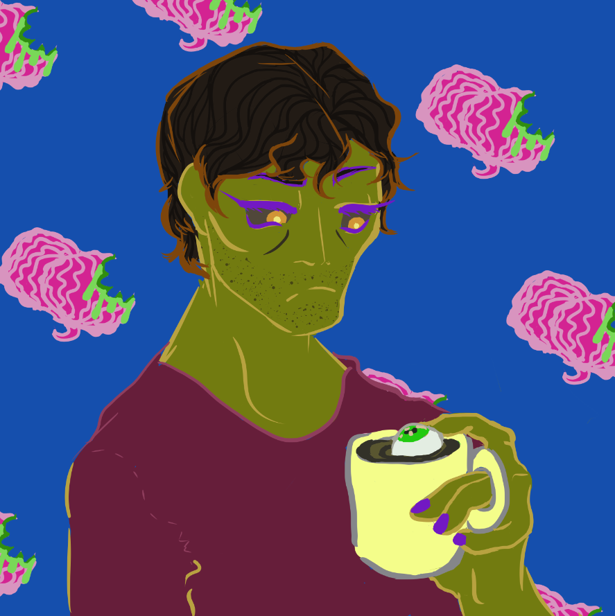

Home
Von's Origins
ADITL
Abilities

"Von" by Rachel Snyder 27 February 2021
Von has the build of a broad young man, 6’2’’, who stands with a slight hunch and whose head is often tilted on his neck, shoulders raised to hide his throat. He has pallid green skin which is usually covered by a hoodie and baggy jeans, or else an ill-fitting dress shirt and slacks when he’s working; not only does his thrifty and overall apathetic taste in clothing conceal his sickly pallor, but it also hides his lithe, sinewy muscles, emaciated torso, and dark blue veins. His hair is raven black, thick, wavy and unkempt. The whites of his deep set eyes have darkened over many years underground, and the natural maroon takes on a vivid, almost neon purple color when he’s hungry/angry/focused. His eyes, naturally dilated, become like slits when this happens as well, glowing a pale yellow to enable him to see well in pitch darkness. His tongue rotted off a long time ago, making speech impossible. In daylight, with the right makeup, he looks rather like a wreck of a man in his late twenties, the Spanish descent evident in the etched cuts of his jaw and valleys of his strong cheekbones.
Though Von knows he’s handsome in the traditional sense, he’s also aware that it can attract the wrong kind of attention (which is any attention at all), so he keeps his shoulders hunched and eyes downcast in public, as though trying to disappear. His demeanor is stoic and cold, which helps keep others away. He walks in a shuffling motion and typically doesn’t move very fast unless absolutely necessary; Frederick won’t let him die, and Von would rather spend the rest of his undead life with brittle bones intact. Von gains some confidence in his mannerisms when teaching, or else when he’s at home with only Frederick to keep him company. He’s learned that making at least some eye contact with students helps them absorb content, as well as take him seriously when he has to reprimand one for doing something stupid. Von can’t speak but will mutter when angry or surprised enough, typically only with Frederick, as he knows most people find it off-putting. Most of his verbal communication with other people consists of quiet, polite laughter or hums to emphasize what he means (especially with those who don’t understand sign language, which is basically everyone).